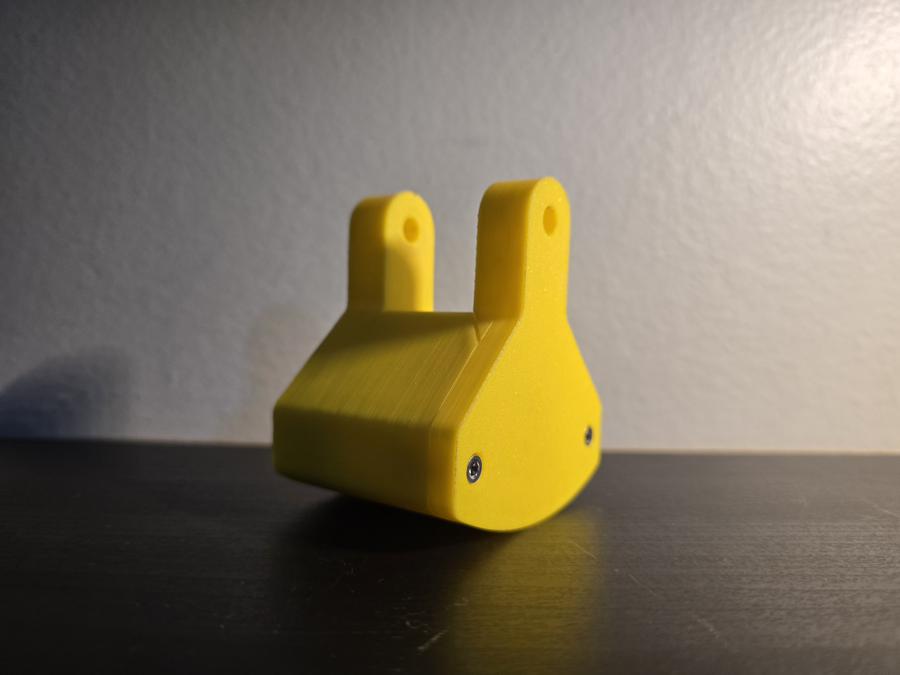
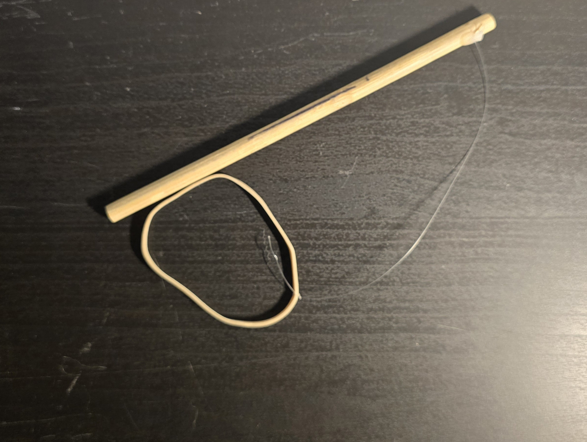
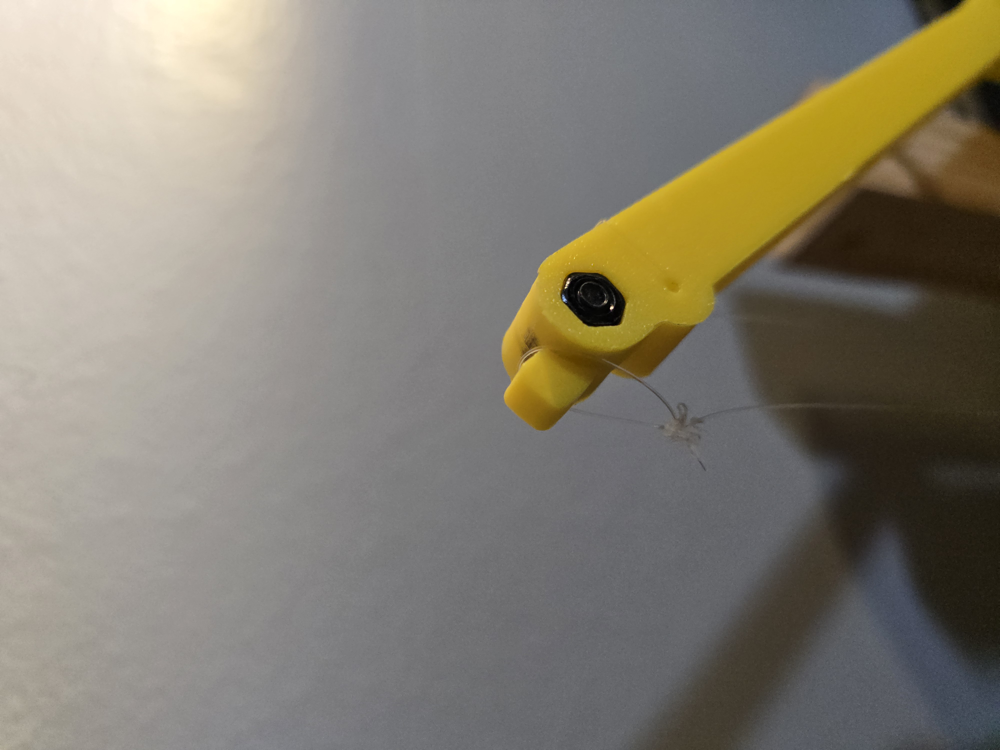
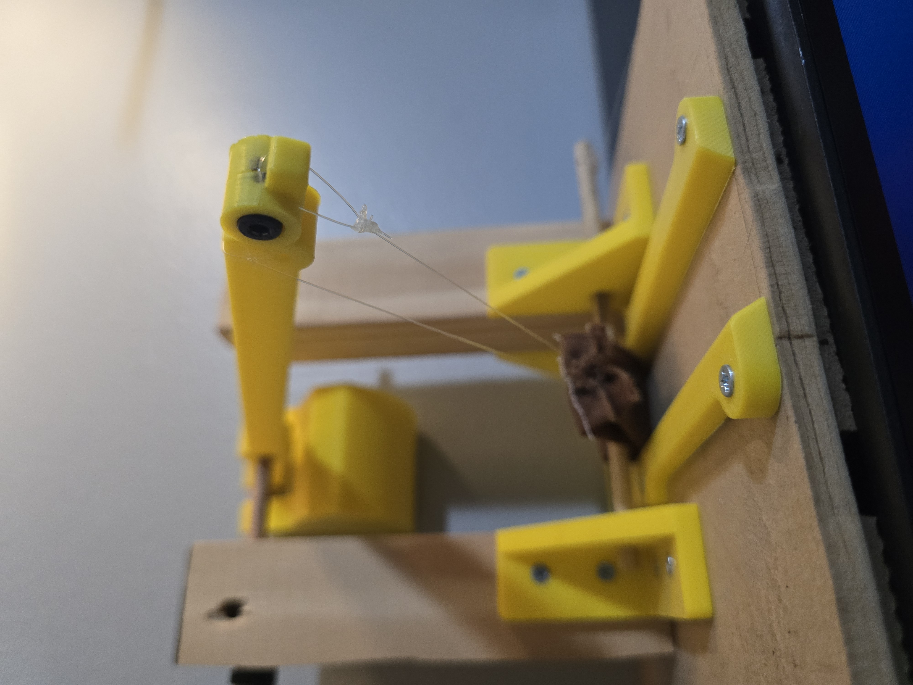
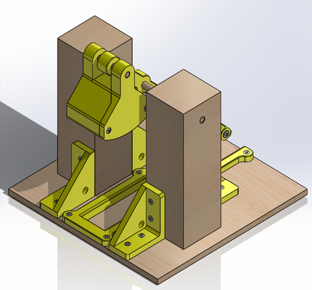
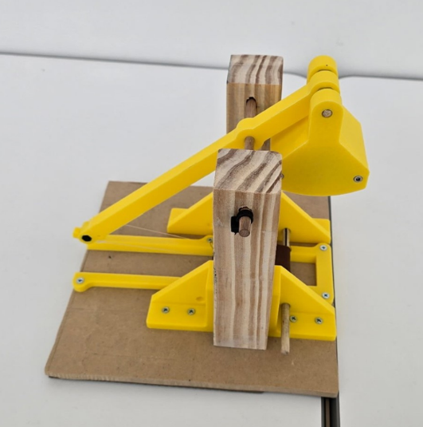
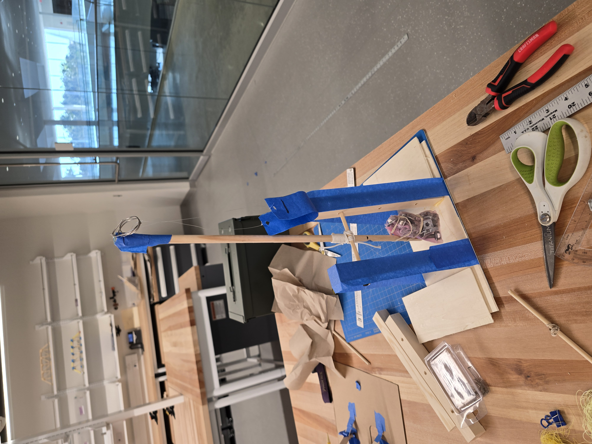

Goal: to design and manufacture a small trebuchet capable of launching a cork into a cup.
Skills: design, SoldWorks, manufacturing.
For one school assignment, I worked on a team to design a catapult capable of firing a cork into a cup. We could design our catapult however we wanted, but our teacher warned us that he had never seen a team successfully make a trebuchet. A trebuchet is a complicated machine, using a falling counterweight to swing a double pendulum. I, however, saw this as a way to push myself, so I opted to design a trebuchet. Our team used many different techniques to create the initial design, such as brainwriting and weighted analysis. I also researched what caused previous teams to fail and used this knowledge to inform our design. We used SolidWorks to model the trebuchet, making sure it fit within the size requirements. Finally, we assembled our design. On the last day of the project, we had to test our trebuchet in class. Our trebuchet worked perfectly, hitting the target on the first try. This project is one of my personal favorites and taught me a lot about design, CAD, and assembly.
A trebuchet is typically powered by a falling counterweight. It launches its payload by using a fixed arm connected to a sling. The sling-arm combination creates a double pendulum, which, in combination with the falling counterweight, introduces a lot of mechanical complexity to the system. Because I knew that this project had caused a lot of difficulties for previous teams, I decided to do some research so that I would not make the same mistakes. After some investigation, we found out that previous teams failed due to faulty counterweights and poor slings. Our team immediately set out to solve these problems.
Now that we had an idea of the task we faced, we began our design process. We used several methods to start and refine our design, such as brainwriting and weighted analysis. We also considered the previous failures of other trebuchet designs. One issue faced was that the moving counterweight tended to get caught in other components. To fix this, we decided to 3D print the arm of the trebuchet as well as a case that held the counterweight. That gave us a great deal of control over the dimensions of those components, allowing for tighter tolerancing to prevent failure.

Another issue faced was that of friction. The trebuchet needed to swing freely. We found that a polished wooden dowel inside a smooth wooden hole could rotate quite easily, solving this problem. The final issue was that of the sling. Previous groups found that the cork would release from the sling at irregular times, ruining their accuracy. I knew that if we wanted reliability, we couldn’t afford to overengineer this component. We needed mechanical simplicity. Our background research revealed that historically, trebuchets could control the moment they released their payload by use of a sling. One end of the sling was fixed, while the other had a loop in it which was slung around a pin. The angle of the pin would determine when exactly the rope loop would slide off the pin, releasing the payload. To recreate this mechanism, a piece of cloth and fishing line proved to be sufficient. However, the cork’s starting position needed to be consistent for this to work. We added a wooden dowel that could be used as a “firing pin.” This pin would be quickly pulled out of the system by means of a handle created from fishing line and a rubber band.



Once all the major design decisions were made, we used SolidWorks to model the entire trebuchet to make sure it fit within the project size requirements. Now, we could move on to the next stage.

After the design was completed, we built the machine and tested it. After a little bit of trial and error, we were able to fire the trebuchet accurately and reliably. The trebuchet had a very flexible design. To make fine adjustments to the firing range of the projectile, we only had to change the angle of the pin which held the sling in place. For large adjustments to the range, the counterweight case could be removed easily, opened up, and filled with heavier or lighter weights. When the final day of the project came, we had to demonstrate our trebuchet to our classmates. The machine performed exactly as planned, hitting our target on the first try.

Now that we had successfully built a trebuchet, we wanted to understand how efficient our design was. We wanted to calculate the theoretical performance of our design and compare that to the actual performance. How could we do this?
The simplest way to get a theoretical “top performance” estimate would be to convert all the potential energy stored in the counterweight into kinetic energy possessed by the projectile.
$$ KE = PE $$
$$ 0.5 * m_p * v^2 = m_c * g * h $$
$$ v = \sqrt{\frac{2 * m_c * g * h}{m_p}} $$
This gives us the initial veloicity of the projectile. We can use a simple kinematic range formula to simplify this further. We assume that the projectile is being fired from a point level with the ground and at an angle of 45 degrees.
$$ R = \frac{v^2 * sin(2 * \theta)}{g} = \frac{v^2}{g} $$
Substituting the expression for v, we get a remarkably simple formula:
$$ R = \frac{2 * m_c * h}{m_p} $$
Curiously, the range of a trebuchet is independent of the acceleration due to gravity.
Using the physical properties of our design, we can estimate the actual performance and compare it to the theoretical value. This gave us a theoretical range of 27 meters. This is far from the actual range achieved during testing. This discrepancy is due to a number of reasons. One, air resistance was not accounted for in the original calculation, and neither are any other frictional effects. Two, the counterweight is still in motion by the time the projectile is released, meaning that not all of the energy is transfered to the projectile.
